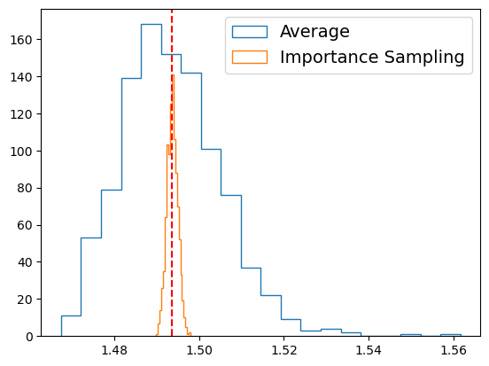
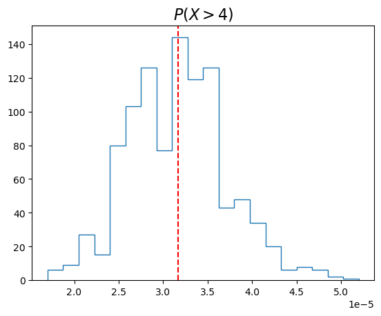
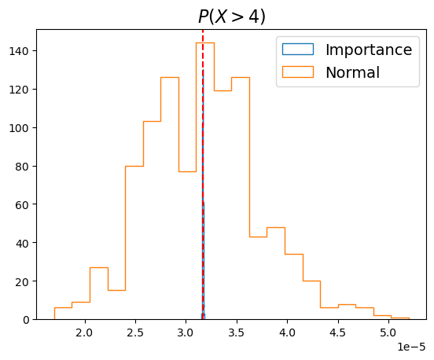
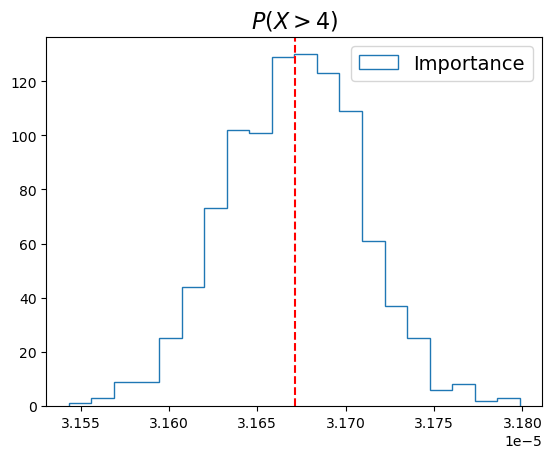

Last time we discussed the importance sampling technique. We choose a weight function $w(\mathbf{x})$ to reduce the variance of the integrated function $f$.
If we want to evaluate the integral of function $f$ over the region $S$: $$ I = \int_S f(\mathbf{x}) \mathrm{d}\mathbf{x}, $$ we can use the importance sampling technique to rewrite the integral as $$ I = \int_S \frac{f(\mathbf{x})}{w(\mathbf{x})} w(\mathbf{x}) \mathrm{d}\mathbf{x}. $$
Effectively, we are computing the weighted average of $f/w$ over the region $S$. The variance of the weighted average is: $$ \langle \varepsilon\rangle = \frac{\sqrt{N\times \mathrm{Var}(f/w)}}{N}\int_S w(\mathbf{x}) d\mathbf{x} $$
The numerator is because the variance of $N$ independent samples is $N$ times the variance of each sample. The denominator is because we are computing the weighted average of $N$ samples.
How to choose the weight function $w(\mathbf{x})$?
We want to choose $w$ so that it is close to $f$, but relatively easy to sample from.
Consider the following integral:
$$ I = \int_0^1 x^{-1/2}e^{-x}\,\mathrm{d}x $$Which part of the integrand should be absorbed into a weight function?
If we choose $w(x) = x^{-1/2}$, then the corresponding probability distribution is: $$ p(x) = \frac{w(x)}{\int_0^1 w(x)\,\mathrm{d}x} = \frac{1}{2\sqrt{x}} $$
This can be sampled using the inverse function method: $$ F(x) = \int_0^x p(x')\,\mathrm{d}x' = \sqrt{x},\quad x = F^{-1}(u) = u^2 $$ where $u$ is chosen from a uniform distribution between $0$ and $1$.
To evaluate the original integral, we draw $N$ samples $\{x_i\}$ from the distribution $p(x)$, and compute: $$ \begin{align} I &= \frac{1}{N}\sum_{i=1}^N \frac{f(x_i)}{w(x_i)} \int_0^1 w(x)\,\mathrm{d}x \\ &= \frac{2}{N}\sum_{i=1}^N e^{-x_i} \end{align} $$
Here is a comparison with 100,000 samples, evaluated 1000 times:
Another example is to compute the likelihood of some extremely rare events. Let $N(x)$ be the standard normal distribution, and I would like to know the probability $P(x > 4)$.
Normally we would need to draw a huge number of samples to get a reasonable number of events above $4$ standard deviations. However, we can use importance sampling to reduce the number of samples required.
Effectively, we want to evaluate the integral: $$ P(x > 4) = \int_4^\infty N(x)\,\mathrm{d}x,\quad \text{where }N(x) = \frac{1}{\sqrt{2\pi}}e^{-x^2/2} $$
The result is $P(x > 4) \approx 3.167\times 10^{-5}$. But even 1,000,000 samples only gets us order unity error.
Result from sampling the normal distribution with 1,000,000 points, repeated 1000 times:
Consider using the following weight function:
$$ w(x) = \begin{cases} e^{-(x - 4)}, & x \geq 4 \\ 0, & x < 4 \end{cases} $$This can also be sampled using the inverse function method: $$ F(x) = \int_4^x w(x')\,\mathrm{d}x' = 1 - e^{4-x},\quad x = F^{-1}(u) = 4 - \log(1 - u) $$
We sample $N$ points $\{x_i\}$ from the distribution $w(x)$, then compute:
$$ \begin{align} P(x > 4) &= \frac{1}{N}\sum_{i=1}^N \frac{N(x_i)}{w(x_i)} \int_4^\infty w(x)\,\mathrm{d}x \\ &= \frac{1}{N}\sum_{i=1}^N \frac{1}{\sqrt{2\pi}}e^{-x_i^2/2 + x_i - 4} \end{align} $$Result from 1,000,000 samples, repeated 1000 times:
Result from 1,000,000 samples, repeated 1000 times:
In statistical mechanics, a physical system in thermal equilibrium with temperature $T$ can occupy a series of states with energies $E_i$. The probability for the system to be in any particular state is given by the Boltzmann distribution: $$ P(E_i) = \frac{e^{-E_i/k_BT}}{Z} $$
where $k_B$ is the Boltzmann constant, and $Z$ acts like a normalization constant, and is called the partition function of the system: $$ Z = \sum_i e^{-E_i/k_BT} $$
A very fundamental question in statistical mechanics is to find the expectation value of a physical quantity $X$. For example, this quantity can just be the energy: $$ \langle E \rangle = \sum_i E_i P(E_i) = \frac{1}{Z}\sum_i E_i e^{-E_i/k_BT} $$
The physical quantity can be other things, such as the magnetization of a ferromagnet, or the number of particles in a particular state, etc.
In general, the partition function of a system is very difficult to compute. As a result, evaluating the expectation value of a physical quantity is usually nontrivial.
Monte Carlo methods are often used to evaluate this expectation value, and importance sampling has a very intuitive physical meaning.
Consider again the expectation value of a physical quantity $X$ with respect to the Boltzmann distribution: $$ \langle X \rangle = \sum_i X_i P(E_i) = \frac{1}{Z}\sum_i X_i e^{-E_i/k_BT} $$
If we choose a weight function $w_i$, what should be the best choice?
Consider the following choice of weight function: $$ w_i = \frac{e^{-E_i/k_BT}}{Z} $$
The corresponding probability distribution is simply itself. The expectation value of $X$ is then: $$ \langle X \rangle = \frac{1}{N}\sum_{i=1}^N \frac{X_iP(E_i)}{w_i} \sum_k w_k = \frac{1}{N}\sum_{i=1}^N X_i $$
Therefore, the Monte Carlo method of evaluating the expectation value of any variable in a statistical system in thermal equilibrium is very simple:
Choose $N$ states according the Boltzmann distribution, and compute the average of the variable over these states: $$ \langle X \rangle = \frac{1}{N}\sum_{i=1}^N X_i $$
For example, the energy of the system is given by: $$ E = \frac{1}{N}\sum_i E_i $$ where $E_i$ is drawn from the exponential distribution $P(E_i)$: $$ P(E_i) \propto e^{-E_i/k_BT} $$